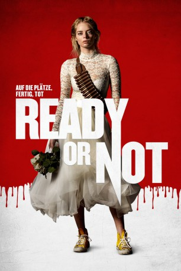
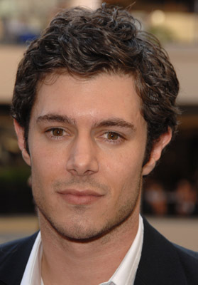
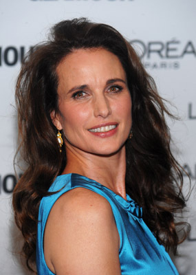
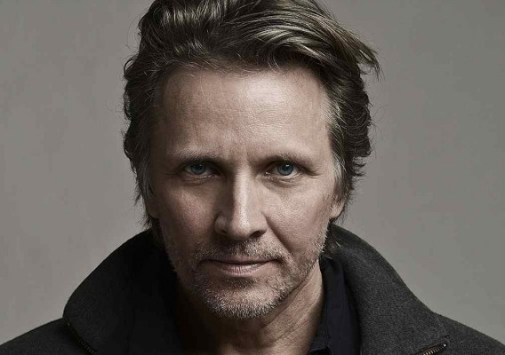

#12186 Ready or Not - Auf die Plätze, fertig, tot
Alternativ: Ready or Not (Englischer Titel)
 
 IMDB-Wertung: 6.9 / 10
IMDB-Wertung: 6.9 / 10  Tomatometer: 88
Tomatometer: 88  Metascore: 64
Metascore: 64 
Es sollte eigentlich der schönste Tag ihres Lebens werden, denn die junge Grace (Samara Weaving) steht kurz davor, ihren geliebten Alex De Lomas (Mark O'Brien) zu heiraten. Die Einführung in die ebenso exzentrische wie schwer reiche Familie geht allerdings alles andere als feierlich vonstatten. Anlässlich der Hochzeit gilt es für den De-Lomas-Klan nämlich allen voran, eine Tradition zu wahren. Und die besagt nun mal, dass ein neues Familienmitglied mit einem Spiel eingeführt werden soll. Und ehe sich Grace versieht, befindet sie sich in einem perfiden Katz-und-Maus-Spiel um Leben und Tod in dem riesigen Anwesen, das über das altbekannte Versteckspiel weit hinausgeht. Brutal und mit allen möglichen Waffen wird Jagd auf Grace gemacht, doch die frisch gebackene Ehefrau hat gar nicht vor, kampflos aufzugeben - und bekommt in dem unerbittlichen Kampf ums Überleben außerdem schon bald Unterstützung...
Jahr: 2019
Dauer: 95 Minuten
FSK: 16
Land: Kanada Studio: 20th Century FoxTonspuren: DD5.1 - ,
Untertitel: Deutsch,
Auflösung: 1080p (1920x808) Größe: 8243 MB
Genre: Thriller, Horror, Komödie, Mystery
Regisseur: Matt Bettinelli-Olpin, Tyler Gillett
Drehbuch: Guy Busick, Ryan Murphy
Soundtrack: Brian Tyler
Darsteller:
- Samara Weaving als Grace
-  Adam Brody als Daniel Le Domas
- Mark O'Brien als Alex Le Domas
- Henry Czerny als Tony Le Domas
-  Andie MacDowell als Becky Le Domas
- Melanie Scrofano als Emilie
 Kristian Bruun als Fitch Bradley
Kristian Bruun als Fitch Bradley- Nicky Guadagni als Aunt Helene
- Elyse Levesque als Charity Le Domas
-  John Ralston als Stevens
- Liam MacDonald als Georgie
- Ethan Tavares als Gabe
- Hanneke Talbot als Clara
- Celine Tsai als Tina
- Daniela Barbosa als Dora
- Chase Churchill als Young Alex
- Etienne Kellici als Young Daniel
- Andrew Anthony als Charles
- Elana Dunkelman als Young Helene
- James Eddy als Masked Family Member #1
- Adam Winlove-Smith als Masked Family Member #2
- Alicia Richardson als Police Officer
- Nat Faxon als Justin
- Kate Ziegler als Young Becky
Datei: X:\2019(N-Z)\Ready or Not - Auf die Plätze, fertig, tot (2019, FSK16, 1920x808).mkv seit 30.12.2019
Festplatte: HD 2018(G-Z)-2019(A-Z)
 Es gibt insgesamt 62 Filme in der Gruppe '2019(N-Z)'
Es gibt insgesamt 62 Filme in der Gruppe '2019(N-Z)'